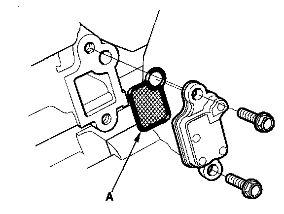

DTC Troubleshooting
DTC P0011:VTC System MalfunctionNOTE: Before you troubleshoot, record all freeze data and any on-board snapshot, and review the general troubleshooting information.
1. Turn the ignition switch ON (II).
2. Clear the DTC with the HDS.
3. Start the engine.
4. Watch the low oil pressure indicator with the engine running.
Is the low oil pressure indicator on?
YES - Check the oil pressure, then go to step 15.
NO - Go to step 5.
5. Do the VTC TEST in the INSPECTION MENU with the HDS.
Is the result OK?
YES - Go to step 6.
NO - Go to step 9.
6. Test-drive at a steady speed between 19-38 mph (30-60 km/h) for 10 minutes.
7. Check the VTC STATUS in the DATA LIST with the HDS.
Does it indicate ON?
YES - Go to step 8.
NO - Go to step 6 and recheck.
8. Monitor the OBD STATUS for DTC P0011 in the DTCs MENU with the HDS.
Does the screen indicate FAILED?
YES - Go to step 9.
NO - If the screen indicates PASSED,intermittent failure, the system is OK at this time. If the screen indicates NOT COMPLETED, go to step 5 and recheck.
9. Turn the ignition switch OFF.
10. Remove the auto-tensioner.

11. Remove the VTC strainer (A), and check it for clogging.
Is the strainer OK?
YES - Go to step 12.
NO - Clean the VTC strainer, replace the engine oil filter and the engine oil, then go to step 14.
12. Test the VTC oil control solenoid valve.
Is the VTC oil control solenoid valve OK?
YES - Go to step 13.
NO - Replace the VTC oil control solenoid valve, then go to step 14.
13. Inspect the VTC actuator.
Is the VTC actuator OK?
YES - Check the VTC system oil passages, then go to step 14.
NO - Replace the VTC actuator, then go to step 14.
14. Turn the ignition switch ON (II).
15. Reset the ECM with the HDS.
16. Clear the CKP pattern with the HDS.
17. Do the ECM idle learn procedure.
18. Do the CKP pattern learn procedure.
19. Do the VTC TEST in the INSPECTION MENU with the HDS.
20. Check for Temporary DTCs or DTCs with the HDS.
Is DTC P0011 indicated?
YES - Check for poor connections or loose terminals at the VTC oil control solenoid valve and the ECM, then go to step 1.
NO - Go to step 21.
21. Monitor the OBD STATUS for DTC P0011 in the DTCs MENU with the HDS.
Does the screen indicate PASSED?
YES - Troubleshooting is complete. If any other Temporary DTCs or DTCs were indicated in step 20, go to the indicated DTC's troubleshooting.
NO - If the screen indicates FAILED, check for poor connections or loose terminals at the VTC oil control solenoid valve and the ECM, then go to step 1. If the screen indicates NOT COMPLETED, go to step 19.